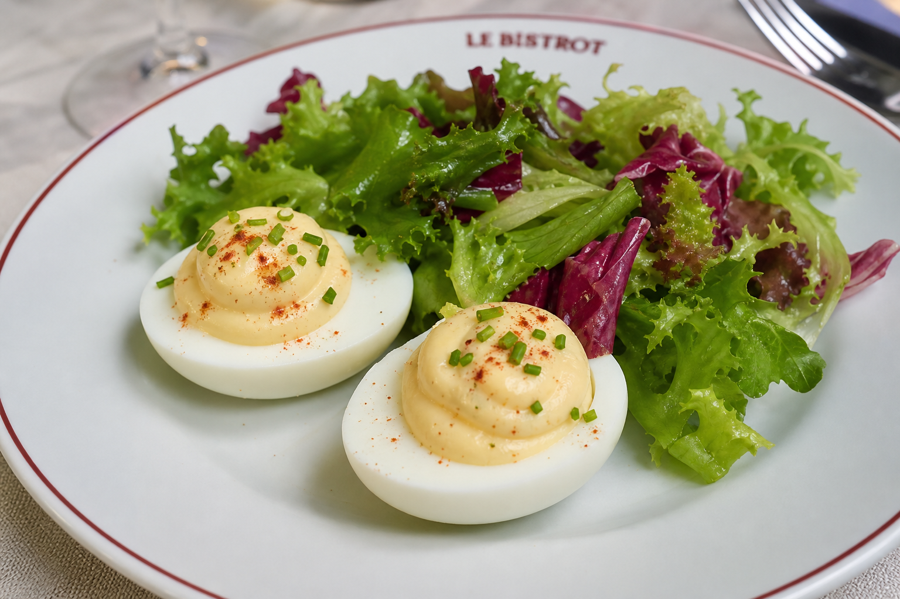
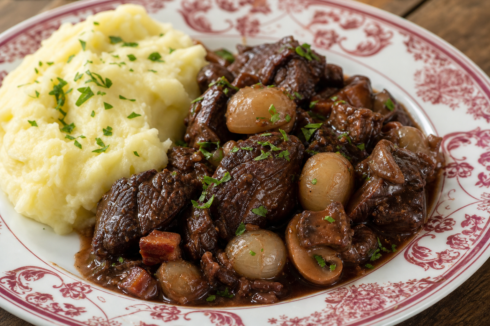
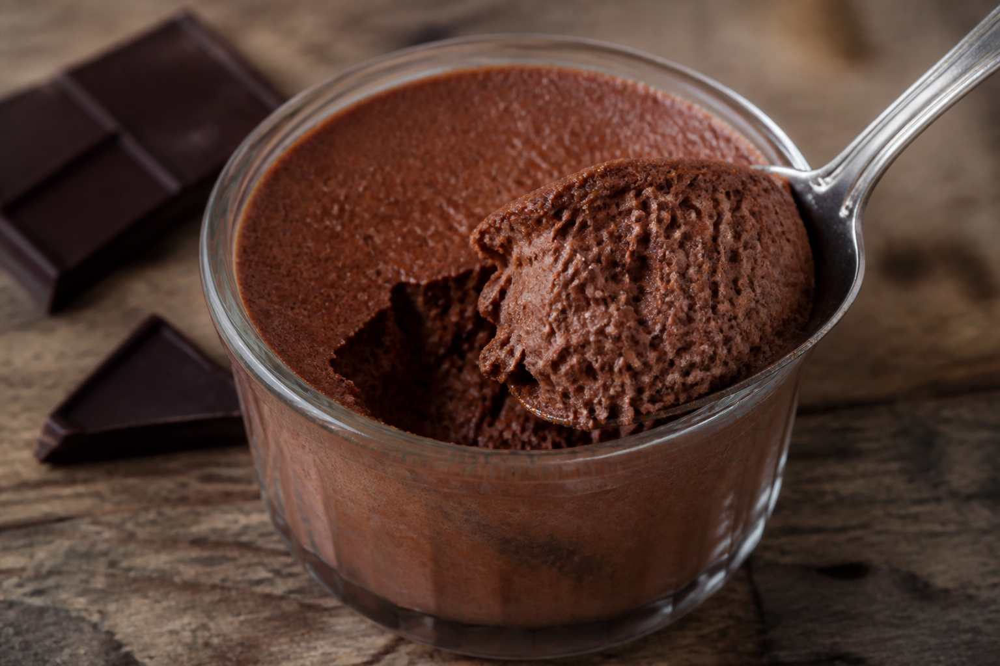

Cuisine
Le détail de chaque plat : ingrédients, provenance et recette. Pour quatre couverts.
Œuf mayonnaise, salade de saison

Ingrédients
- 4 œufs fermiers (ferme du Gâtinais, Loiret)
- 1 jaune d'œuf pour la mayonnaise
- 15 cl d'huile de tournesol
- 1 c. à café de moutarde de Dijon
- 1 c. à café de vinaigre de vin blanc
- 200 g de mesclun (maraîcher de Rungis)
- Huile d'olive, sel, poivre
Recette
- Cuire les œufs 9 minutes à l'eau frémissante, puis les refroidir et les écaler.
- Monter la mayonnaise : jaune, moutarde et vinaigre, puis l'huile en filet.
- Assaisonner le mesclun à l'huile d'olive et au vinaigre.
- Couper les œufs en deux, napper de mayonnaise, dresser avec la salade.
Bœuf bourguignon, purée maison

Ingrédients
- 1,2 kg de paleron de bœuf charolais (boucherie Charolles, Saône-et-Loire)
- 75 cl de vin rouge de Bourgogne
- 150 g de lardons fumés
- 250 g de champignons de Paris
- 200 g d'oignons grelots
- 2 carottes, 1 bouquet garni, 2 gousses d'ail
- 1 kg de pommes de terre (variété Bintje)
- 150 g de beurre, 20 cl de lait
- Farine, sel, poivre
Recette
- Faire mariner la viande dans le vin avec carottes et bouquet garni, une nuit.
- Égoutter, saisir la viande, fariner, mouiller avec la marinade.
- Mijoter à couvert 3 heures à feu doux.
- Faire revenir lardons, champignons et oignons, ajouter en fin de cuisson.
- Cuire les pommes de terre à l'eau, écraser avec beurre et lait chaud.
- Rectifier l'assaisonnement et dresser.
Mousse au chocolat

Ingrédients
- 200 g de chocolat noir 64 % (chocolatier de Bayonne)
- 6 œufs fermiers
- 30 g de sucre
- 1 pincée de sel
Recette
- Faire fondre le chocolat au bain-marie.
- Séparer les blancs des jaunes ; incorporer les jaunes au chocolat tiède.
- Monter les blancs en neige avec le sel, serrer avec le sucre.
- Incorporer délicatement les blancs au chocolat.
- Répartir en verrines et réserver au frais au moins 4 heures.
Provenance
Nous travaillons en circuit court autant que possible. Les fournisseurs sont
les mêmes toute l'année ; ils sont indiqués ci-dessus pour chaque ingrédient.
Les allergènes principaux présents au menu sont : œuf, lait, gluten (farine),
sulfites (vin).